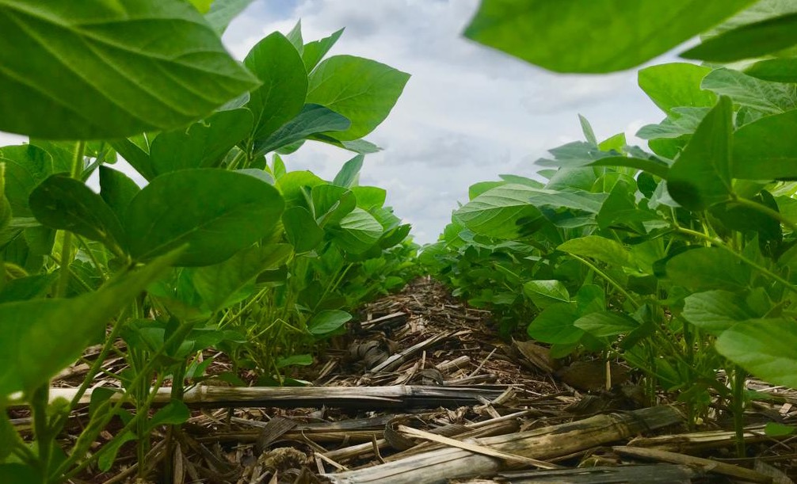
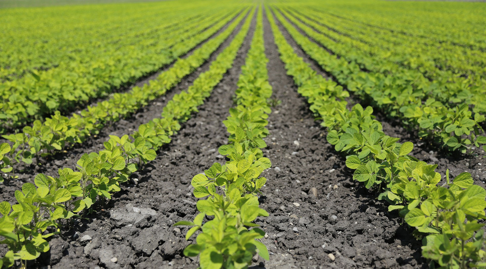

Parceiros oferecem
Fertilidade de Solo
Aprimorando o manejo de fertilidade tradicional, mapear a área com grid média de 4,0 ha no primeiro ano, otimiza custo com uso de fertilizantes, no segundo ano, através do coeficiente de variação podemos ajustar um grid maior, para avaliar a eficiência dos insumos, associando ao planejamento operacional da safra.
Fornecendo também um manejo da cultura juntamente com todo o trabalho de fertilidade e nutrição. Indicação de matéria prima para supir inclusive enxofre, gesso, calcário, não só para V%, mas para a elevação de cálcio e magnésio na CTC do solo.
Parceiros oferecem
Consultoria Agronômica
Planejar antes de realizar o plantio. Esse é o uns segredos do sucesso.
Antecipando juntamente com o produtor, definindo cultivares por cada talhão da fazenda, manejando os insumos de acordo com cada material de acordo com a sanidade, ou solo, ou cobertura, para entregar de forma uma solução para um melhor portifólio de compra. A definição da melhor janela de plantio, logística de colheita e próxima safra, etc.
São todos esses e outros detalhes do dia dia que entregam satisfação e o RESULTADO ao final de cada colheita, economia e lucratividade.
Grupo VDAgro - Compra de Insumos
Relações comerciais entre nossos clientes e os fornecedores de insumos, atráves dos intermediadores do Pull para realizar as cotações em grande escala, com volume, aumenta o poder de "barganha", ampliando a possibilidade de descontos. Foco em fertilizantes, sementes, químicos, nutrição. Em breve (buscamos) novos parceiros para aquisição de crédito em intituições financeiras, para compras à vista, também projetos para compra de máquinas e comercialização de grãos.